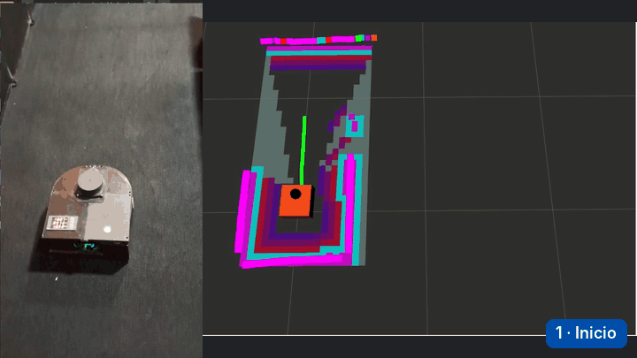

Lo esencial
- Una frontera es el borde entre el espacio libre conocido y lo desconocido. Ir hacia las fronteras hasta que no quede ninguna es una forma simple y efectiva de explorar.
- El explorador vuelve a elegir destino cada 3,3 s y manda la nueva meta sin cancelar la anterior. Nav2 cierra la anterior como abortada. Por eso 53 de 54 metas abortadas fueron reemplazos y no fallas.
- Cinco de seis exploraciones terminaron solas, al no quedar fronteras. El efecto secundario es que el explorador también tacha metas que no fallaron.
La idea de frontera
En 1997, Brian Yamauchi propuso una idea que sigue vigente. Para explorar un lugar desconocido, un robot debería ir hacia las regiones que separan lo que ya vio de lo que todavía no ha visto. Al llegar, observa, actualiza su mapa y vuelve a buscar (Yamauchi, 1997). En su propuesta, el robot elige la frontera accesible más cercana, hace un barrido de 360° al llegar, y si no logra avanzar en cierto tiempo marca esa frontera como inaccesible.
La idea se mantiene en trabajos recientes que mejoran cómo se puntúa cada frontera (Liu et al., 2025), y convive con enfoques más complejos, como los que estiman la ganancia de información de cada destino o el active SLAM, que también considera la incertidumbre del mapa (Placed et al., 2023).
Pruébalo: un robot explorando por fronteras
Este simulador hace el mismo ciclo que el robot real. Mide con un láser, actualiza el mapa, busca fronteras, elige la de mejor puntaje con una mezcla de cercanía y tamaño, planifica con A estrella y se mueve. Igual que el explorador del robot, vuelve a elegir cada 3,3 s, y cuenta las metas que cambia antes de llegar.
Simulación ilustrativa con un plano inventado inspirado en el recinto de pruebas. La regla de puntaje y el período de 3,3 s imitan a explore_lite. La dinámica del robot, el láser y la planificación están simplificados.
Cómo decide explore_lite en este robot
El robot usa explore_lite, en su versión para ROS 2 (Alvarez, 2021), derivada del proyecto original para ROS 1 (Hörner, 2017). Busca fronteras sobre el mapa de costos global y envía metas de navegación a Nav2 Sec. 4.5.6, Alg. 4.4, Anexo 5.6.
- Detecta. Una celda desconocida que toca una celda libre es celda de frontera. Las celdas de frontera contiguas forman una frontera.
- Filtra. Descarta las fronteras más chicas que el mínimo configurado, aquí 0,05 m, o sea, basta una celda. El archivo de ejemplo del paquete usa 0,75 m.
- Puntúa. Combina la distancia al robot, con peso 3, y el tamaño de la frontera, con peso 1. Prefiere las cercanas y las grandes.
- Salta las tachadas. Ignora las que están en la lista negra, con una tolerancia de cinco celdas.
- Envía. Si el punto elegido cambió en un centímetro o más respecto de la meta anterior, envía una meta nueva a Nav2, sin cancelar la que está en curso.
- Repite cada 3333 ms, porque su frecuencia está configurada en 0,3 Hz.
| Aspecto | Yamauchi, 1997 | explore_lite en este robot |
|---|---|---|
| Qué frontera elige | La accesible más cercana | La de mejor puntaje entre cercanía y tamaño |
| Cuándo vuelve a elegir | Al llegar, después de un barrido de 360° | Cada 3,3 s, sin esperar a llegar |
| Tamaño mínimo | Parecido al del robot | Una celda de 5 cm |
| Si no logra avanzar | La marca como inaccesible | La anota en una lista negra |
Un tamaño mínimo de una sola celda permite elegir fronteras muy pequeñas, que pueden venir del ruido del láser o de rincones donde el robot no cabe. Eso puede alargar la exploración. La tesis no lo cuantificó. También documenta dos detalles del código tal como se ejecutó. El punto que se envía como centro de la frontera no es su centroide geométrico, y el puntaje mezcla unidades distintas, así que es una heurística y no una medida física Anexo 5.6.
El hallazgo: abortada no significa fallida
En las cinco exploraciones válidas se generaron 60 metas. A primera vista el resultado es alarmante. 54 quedaron abortadas, una se completó y cinco no alcanzaron a registrar su estado final Sec. 5.4, Tabla A7.1. ¿Falló la navegación casi siempre?
No. En la versión de Nav2 usada, cuando llega una meta nueva mientras otra está en ejecución, la anterior se termina con estado abortado (Nav2, rama foxy-devel). Y el explorador manda una meta nueva cada 3,3 s sin cancelar la anterior. El mismo estado registra entonces dos cosas muy distintas, los reemplazos que hace el explorador y las fallas reales de Nav2.
Cómo se separaron reemplazos de fallas
Cada meta de navegación tiene un identificador único de 16 bytes. Se reconstruyó el historial de cada una a partir del flujo de estados de la acción de navegación, que quedó registrado completo en cada sesión. Una meta abortada se clasificó como reemplazada cuando la meta siguiente ya figuraba en ejecución mientras la abortada seguía activa Anexo 8.4.
| Iteración | Generadas | Abortadas | Reemplazadas por el explorador | Exitosas | Sin estado final | Tiempo activo mediano |
|---|---|---|---|---|---|---|
| 1 | 18 | 17 | 16 | 0 | 1 | 3,3 s |
| 3 | 9 | 8 | 8 | 0 | 1 | 3,3 s |
| 4 | 12 | 11 | 11 | 0 | 1 | 3,3 s |
| 5 | 11 | 9 | 9 | 1 | 1 | 3,3 s |
| 6 | 10 | 9 | 9 | 0 | 1 | 3,3 s |
| Total | 60 | 54 | 53 | 1 | 5 | no aplica |
El resultado es nítido. En 53 de los 54 abortos, la meta terminó porque el explorador la reemplazó. El aborto restante es la primera meta de la iteración 1, que ya figuraba abortada en el primer mensaje registrado y no se pudo clasificar. El tiempo mediano que cada meta estuvo activa fue de 3,3 s en las cinco corridas, exactamente el período del explorador. Con los datos registrados no se identificó ningún aborto causado por una falla de Nav2. Tampoco se puede saber si las metas reemplazadas habrían llegado a completarse.
Las cinco metas sin estado final son la última de cada corrida. Al no encontrar fronteras, el explorador pidió cancelarlas, y el registro se cerró antes de que la cancelación terminara.
Indica cuántas veces el robot llegó a menos de 10 cm del punto de una frontera antes de que el explorador cambiara de destino. No es una tasa de éxito de la navegación ni de la exploración. Lo que muestra que el robot va hacia donde se le manda es que el mapa creció en cada corrida hasta que no quedaron fronteras Sec. 5.4.
El efecto secundario: la lista negra
La lista negra existe para que el robot no insista para siempre en una frontera inalcanzable, la misma idea que Yamauchi. Un punto entra a la lista si pasan 10 s sin acercarse a él o si Nav2 responde que su meta quedó abortada. Como las metas reemplazadas también quedan abortadas, el explorador tacha fronteras que no fallaron.
Cuando todas las candidatas quedan tachadas, el explorador vacía la lista y vuelve a intentar. Ocurrió 17 veces en las cinco corridas válidas, 11 de ellas en la iteración 1. Este efecto no impidió terminar la exploración, pero su efecto sobre la duración del recorrido no se cuantificó Sec. 5.4.
La mejora propuesta
Cancelar la meta en curso antes de enviar la siguiente. Así los reemplazos quedarían registrados como cancelados, que el explorador no anota, y la lista negra recibiría solo fallas reales. Otra opción es conservar el registro del navegador de Nav2. La tesis lo plantea como trabajo futuro 5, junto con evaluar cómo influye la frecuencia del explorador en la duración de la exploración.
Lo que enseña este hallazgo
El hallazgo apareció después de los ensayos, porque los contadores automáticos del script no medían lo que parecían medir. El contador de metas generadas quedó en cero, porque el mensaje que buscaba estaba en un nivel de registro que no se imprimía. Y los contadores de éxito y fallo sumaban una vez por cada mensaje de estado, no por cada meta Anexo 8.4.
Se pudo corregir porque los datos crudos quedaron guardados completos. Dos buenas prácticas salen de aquí. Registrar siempre identificadores únicos de cada evento que se quiera contar, y guardar los datos crudos además de los resúmenes, para poder reconstruir lo que pasó cuando un número no cuadra.
Cuándo termina la exploración
Las cinco ejecuciones válidas terminaron de forma automática. En cada una, el explorador informó que no quedaban fronteras en el mapa de costos, detuvo la exploración y pidió cancelar la meta en curso. El script del ensayo detecta ese aviso, guarda el mapa y cierra el registro, sin intervención del operador Sec. 5.4.
Que no queden fronteras significa que el espacio alcanzable quedó mapeado. No prueba por sí solo que se cubrió todo el recinto, porque su superficie no se midió aparte del mapa. La evidencia de que las cinco corridas llegaron al mismo espacio es que el área libre fue casi idéntica en todas, como se ve en Ver y dibujar el mapa.

Explorar sin mapa previo es la base de los robots de búsqueda y rescate. En el desafío subterráneo de DARPA, el equipo CERBERUS ganó la final de 2021 con robots con patas y aéreos que navegaron, exploraron y mapearon por su cuenta túneles, sistemas urbanos subterráneos y cuevas, donde no hay GPS y la comunicación es limitada (Tranzatto et al., 2022). Es el mismo problema que el de esta tesis, a una escala y con exigencias mucho mayores.
Malentendidos frecuentes
Solo 1 de 60 metas se completó, así que la navegación falla.
53 de 54 abortos fueron reemplazos del explorador. Esa cifra no es una tasa de éxito.
Los abortos se deben al recinto chico y a la inflación.
Vienen del reemplazo de metas que hace el explorador. Con los datos registrados no se identificaron abortos por fallas de Nav2.
Tachar las metas reemplazadas ayuda a descartar fronteras malas.
Una frontera reemplazada no es una frontera inválida. Es una limitación de la integración entre explore_lite y Nav2.
El explorador usa la misma frontera que Yamauchi.
Usa la misma idea general, con otra definición de celda, un tamaño mínimo de una celda y una nueva elección cada 3,3 s.